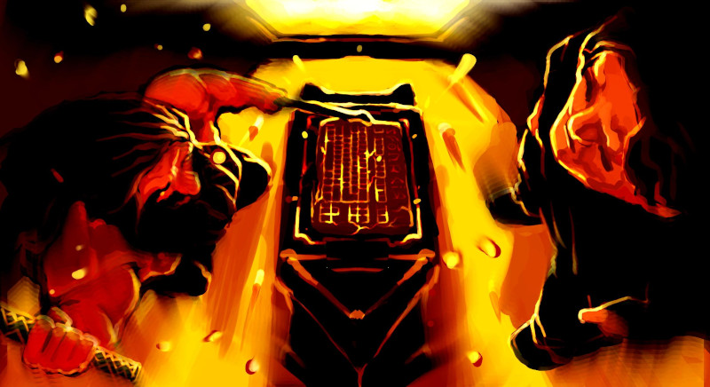

About
Hi, I’m Nhân. I make webstuff for a living.

My mind is a sad mess that cannot hold much information after a couple of months or so. This blog is where I write down interesting things I discover. On occasional bad days I might throw all my ramblings here too, but hopefully those will be rare.
This blog is made with my homegrown organic artisanal static site
generator called s4g and hosted on Github Pages.